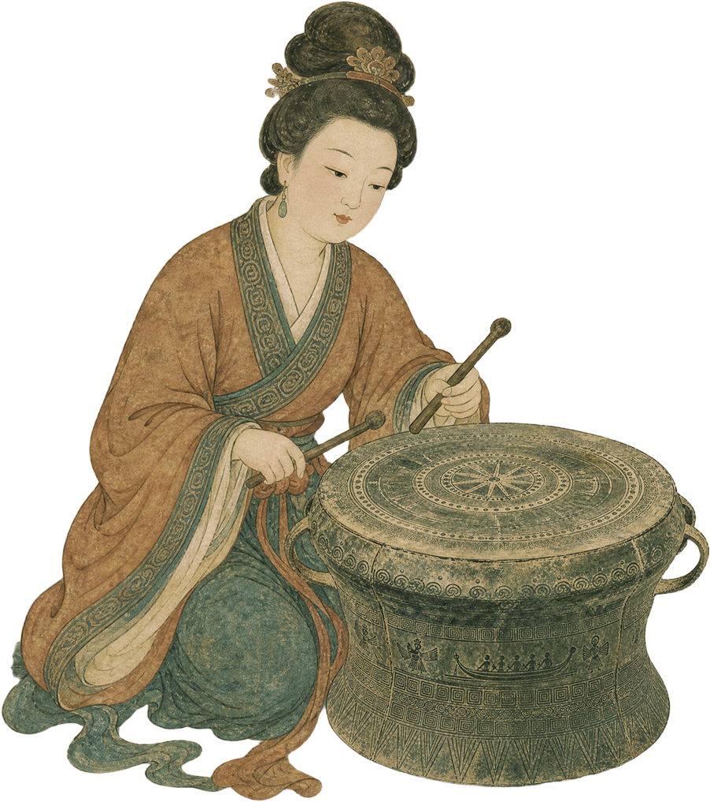
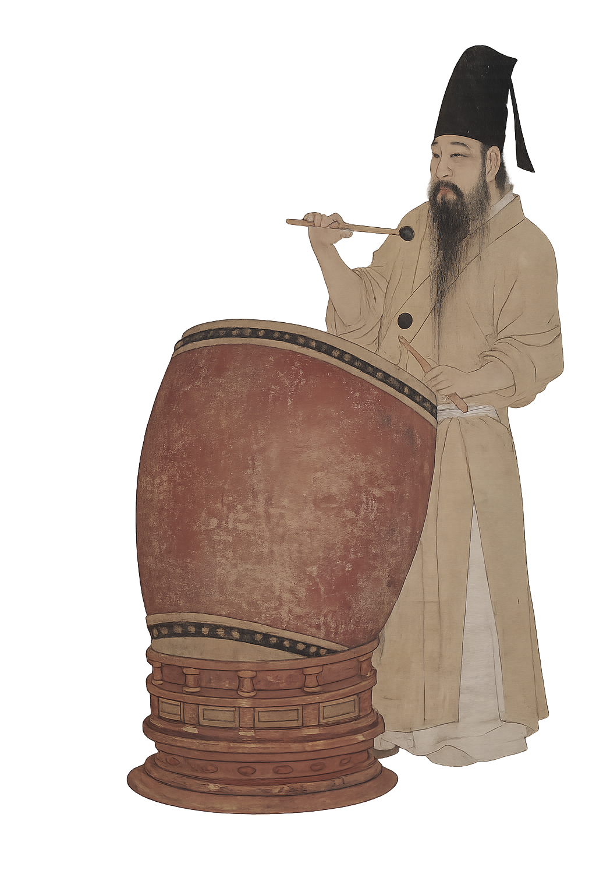

Observing Phenomena · Evolution
观象·演变
新石器
贾湖骨笛
笛子的历史可追溯至新石器时代，1889-1990年在河南舞阳出土的贾湖骨笛把笛子的发展历史大大延长。
据中国音乐考古专家鉴定，这种管开六个按孔的骨笛，距今已有8000-9000年历史，是迄今发现最早的吹奏乐器。贾湖骨笛的发现，证明了中国古代音乐文化源远流长。

河南舞阳贾湖骨笛（新石器时代，现藏中国博物院）
Observing Phenomena · Evolution
观象·演变

汉代
羌笛传入
汉武帝时期，西域羌笛经丝绸之路传入中原，定名横吹，彻底区分竖吹篪 / 箫；
改为水平持握演奏，七孔结构定型，用于军队鼓吹、骑吹马上乐；
无笛膜孔，音色厚重雄浑，成为军乐、郊宴乐主旋律乐器；
笛正式脱离原始骨制，全面改用竹材制作。

《史记》《汉书》中关于横吹的记载
Observing Phenomena · Evolution
观象·演变

隋唐
竹笛定型
改良关键：新增笛膜孔，贴竹膜后音色清亮通透，现代竹笛音色基础成型；
隋代（公元581-618年）以后，有大横吹和小横吹两种，唐代定型长短梆笛、曲笛两类。

莫高窟第 112 窟 南壁乐舞图（中唐）榆林窟第 25 窟 南壁观无量寿经变（中唐）